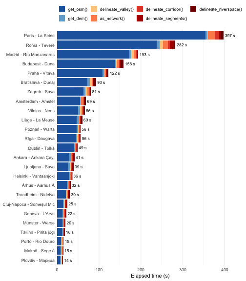

This vignette documents how rcrisp performs across a
diverse set of European city-river cases. Benchmarks were run on a
single machine in a single session using OpenStreetMap and Copernicus
GLO-30 DEM data downloaded live with the get_osm() and
get_dem() functions, respectively. The timings from these
two data retrieval functions therefore include network latency and
reflect the volume of spatial data available for each case, not just CPU
work.
library(dplyr)
library(ggplot2)
# Load and prepare data
raw <- read.csv("../benchmark/output/timings.csv", stringsAsFactors = FALSE) |>
mutate(case = paste0(city_name, " - ", river_name))
# Define pipeline steps
io_steps <- c("get_osm", "get_dem")
compute_steps <- c("delineate_valley", "as_network", "delineate_corridor",
"delineate_segments", "delineate_riverspace")
all_steps <- c(io_steps, compute_steps)
# Define display labels for steps
step_labels <- c(
get_osm = "get_osm()",
get_dem = "get_dem()",
delineate_valley = "delineate_valley()",
as_network = "as_network()",
delineate_corridor = "delineate_corridor()",
delineate_segments = "delineate_segments()",
delineate_riverspace = "delineate_riverspace()"
)
# Define colours: blues for I/O steps, warm tones for computation
step_colours <- c(
"get_osm()" = "#2166AC",
"get_dem()" = "#74ADD1",
"delineate_valley()" = "#FDCC8A",
"as_network()" = "#FC8D59",
"delineate_corridor()" = "#E34A33",
"delineate_segments()" = "#B30000",
"delineate_riverspace()" = "#7F0000"
)
# Prepare data for plotting
case_order <- raw |>
filter(step == "total", status == "success") |>
arrange(elapsed_s) |>
pull(case)
bar_data <- raw |>
filter(case %in% case_order, step %in% all_steps, status == "success") |>
mutate(
step_label = factor(step_labels[step], levels = step_labels[all_steps]),
case = factor(case, levels = case_order)
)
case_totals <- bar_data |>
group_by(case) |>
summarise(total = sum(elapsed_s), .groups = "drop")Run time by case and step
Blues indicate data retrieval functions
(get_osm(), get_dem()); warm colours indicate
computation functions. Cases are sorted from fastest
(bottom) to slowest (top).
ggplot(bar_data, aes(x = elapsed_s, y = case, fill = step_label)) +
geom_bar(stat = "identity", position = position_stack(reverse = TRUE)) +
geom_text(
data = case_totals,
aes(x = total, y = case, label = paste0(round(total), " s")),
inherit.aes = FALSE,
hjust = -0.15,
size = 3
) +
scale_x_continuous(expand = expansion(mult = c(0, 0.12))) +
scale_fill_manual(values = step_colours,
guide = guide_legend(nrow = 2)) +
labs(x = "Elapsed time (s)", y = NULL, fill = NULL) +
theme_minimal(base_size = 11) +
theme(
legend.position = "top",
legend.key.size = unit(0.5, "cm"),
panel.grid.major.y = element_blank()
)
plot of chunk bar-chart
Key findings
get_osm()dominates total runtime, typically accounting for 70–90% of wall-clock time. The wide range (from ~8 s for Plovdiv to ~355 s for Paris) reflects OSM data volume rather than algorithmic complexity.get_dem()is fast and consistent (1.8–7 s), since the number of DEM tiles depends on geographic extent, not urban density.Among computation steps,
delineate_corridor()anddelineate_segments()show the most variability relative to their mean times.delineate_corridor()is noticeably slower for large, dense street networks (Paris: 10.4 s vs. typical 1–2 s), whiledelineate_riverspace()is more consistently fast across all cases.as_network()anddelineate_corridor()scale with street network size, and are noticeably slower for large, dense cities such as Paris (~26 s combined), Rome (~17 s), and Budapest (~7 s).delineate_valley()anddelineate_segments()are generally fast across all cases, though a few complex cases exceed 5 s.